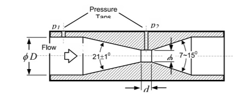
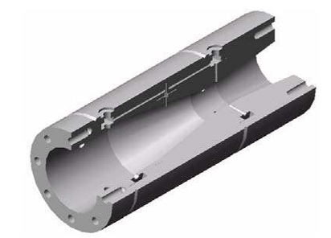
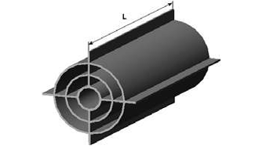

Portfólio
Abaixo estão listados alguns dos artigos científicos que publiquei durante minha trajetória acadêmica e profissional.
- Engineering Design of an Electronic Flow Transducer Based on a Venturi Differential Pressure Device
Tecnologia Magazine, Universidade de Fortaleza, p. 55 - 64, 2004. - Venturi meter design oriented by computational simulation: Flow Straightener, throat geometry and fluid influence on discharge coefficient
CONEM 2004 - III National Congress of Mechanical Engineering - Numerical Study on the Effects of Flow Straighteners Geometry and Installation on Upstream Flow Condition in a Venturi Meter
CILAMCE 2003, Ouro Preto – MG, Brasil.
Para obter mais informações, entre em contato através do formulário na seção "Contato" deste site.